UDN
Search public documentation:
MainEditorToolboxCH
English Translation
日本語訳
한국어
Interested in the Unreal Engine?
Visit the Unreal Technology site.
Looking for jobs and company info?
Check out the Epic games site.
Questions about support via UDN?
Contact the UDN Staff
日本語訳
한국어
Interested in the Unreal Engine?
Visit the Unreal Technology site.
Looking for jobs and company info?
Check out the Epic games site.
Questions about support via UDN?
Contact the UDN Staff
主要编辑器工具箱
概述
编辑器模式
 在该范围内的工具会更改编辑器的编辑模式。
在该范围内的工具会更改编辑器的编辑模式。
相机模式
使编辑器处于 Camera Mode（相机模式），它是用于添加、选择以及修改 actor 的默认编辑模式。几何体模式
 使编辑器处于“几何体模式”，并打开“几何体模式”窗口，在这里可以使用视口中的转换工具编辑 CSG 画刷。
要了解有关该模式的更多信息，请参阅几何体模式入门页面。
使编辑器处于“几何体模式”，并打开“几何体模式”窗口，在这里可以使用视口中的转换工具编辑 CSG 画刷。
要了解有关该模式的更多信息，请参阅几何体模式入门页面。
地形编辑模式
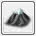
使编辑器处于“地形编辑模式”，并打开“地形编辑器”窗口。 有关使用该模式的更多信息，请参阅地形编辑器用户指南。贴图对齐模式
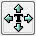
使编辑器处于“贴图对齐模式”，该模式可以在视口中的 CSG 表面上交互地修改贴图平移、旋转和缩放比例。网格物体描画模式
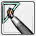
使编辑器处于“网格物体描画模式”，该模式可以在编辑器视口中的网格物体上交互地绘制顶点颜色。 有关使用该模式的更多信息，请参阅网格物体绘制参考页面。静态网格物体模式
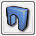
使编辑器处于“静态网格物体模式”，该模式可以使用最小和最大缩放比例和旋转值快速放置很多类似的静态网格物体，同时提供一些功能，例如，快速将‘杂物’添加到一个地图中。画刷图元
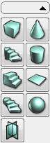
该区域内的按钮可以用于改变构建画刷的形状，使用预定义、还可以配置的图元形状。右击该区域的任何按钮，将会打开一个属性对话框，在这里可以按照需要修改图元的设置。左击则只会使用当前设置将当前的构建画刷替换为一个新的图元形状。立方体
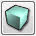
会创建一个立方体或箱形画刷。这个画刷最常用于增建房间或房间的框架，尤其是在开发的早期阶段拟定区域和测试流程过程。锥体
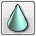
会创建一个锥体形状的画刷，或者是将一端重叠到一个单独的点上的圆柱体。曲线形楼梯
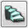
会在一个曲线形的阶梯集合的集会公共场所中创建一个画刷。注意： 对于此类地方，通常最好使用一个静态网格物体。圆柱体
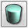
会创建一个圆柱体画刷，可以将其用于诸如环形房间、管道、列等等地方。直线形楼梯
 会在一个直线形的阶梯集合的集会公共场所中创建一个画刷。注意： 对于此类地方，通常最好使用一个静态网格物体。
会在一个直线形的阶梯集合的集会公共场所中创建一个画刷。注意： 对于此类地方，通常最好使用一个静态网格物体。
表格
 会创建一个单独的方形画刷或一个平面。它将不会碰撞或阻挡玩家或其他几何体。
会创建一个单独的方形画刷或一个平面。它将不会碰撞或阻挡玩家或其他几何体。
螺旋形楼梯
 会在一个螺旋形的阶梯集合的集会公共场所中创建一个画刷。注意： 对于此类地方，通常最好使用一个静态网格物体。
会在一个螺旋形的阶梯集合的集会公共场所中创建一个画刷。注意： 对于此类地方，通常最好使用一个静态网格物体。
四面体（球体）
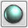
一般来说，会创建一个完全由三角形组成的球体画刷，而且很可能会形成一个非常复杂和密集的表面。注意： 应该像这样为几何体使用一个静态网格物体，因为 BSP 画刷形状应该尽量简单才能避免错误，卡片
 该图元会创建一系列在支点周围旋转的薄片。它适于创建各种贴图效果，例如，开火、烟雾、血浆、树和锁链，在那些效果比完美细节更重要的情况下。
该图元会创建一系列在支点周围旋转的薄片。它适于创建各种贴图效果，例如，开火、烟雾、血浆、树和锁链，在那些效果比完美细节更重要的情况下。
CSG 运算
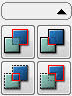
该区域中的这些工具都会进行对于 BSP 世界几何体必需的构造型立体几何表达式 (CSG) 运算。添加
 会从当前构建笔刷中创建一个添加型笔刷。
会从当前构建笔刷中创建一个添加型笔刷。
挖空
 会从当前构建笔刷中创建一个挖空型笔刷。
会从当前构建笔刷中创建一个挖空型笔刷。
交集
 从当前构建画刷包含的所有画刷的交集创建一个画刷，并使用新的画刷替换这个构建画刷。
从当前构建画刷包含的所有画刷的交集创建一个画刷，并使用新的画刷替换这个构建画刷。
反交集
 从当前构建画刷包含的所有画刷的反交集创建一个画刷，并使用新的画刷替换这个构建画刷。
从当前构建画刷包含的所有画刷的反交集创建一个画刷，并使用新的画刷替换这个构建画刷。
添加型画刷
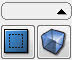
该区域中的工具允许使用当前构建画刷向关卡添加特殊画刷和体积。添加特殊画刷
 打开“添加特殊画刷”对话框，使用当前构建画刷添加一个新的特殊画刷类型。
打开“添加特殊画刷”对话框，使用当前构建画刷添加一个新的特殊画刷类型。
添加体积
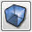
通过在该列表中右击并选择一项，从构建画刷中创建一个新的体积画刷类型。选项和可见性区域
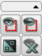
该区域中的工具会控制您在视口中看到的场景，还可以修改选项。只显示已选的 Actor
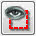
除现在已经选择的 actor，隐藏地图中的所有 actor。隐藏已选的 Actor
 隐藏所有目前已经选择的 actor。
隐藏所有目前已经选择的 actor。
反向选择
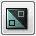
方向选择所有目前已选的 actor 并选择所有不在最初选择中的 actor。显示所有 Actor
 取消隐藏所有隐藏的 actor，这样就可以看见所有 actor。
取消隐藏所有隐藏的 actor，这样就可以看见所有 actor。